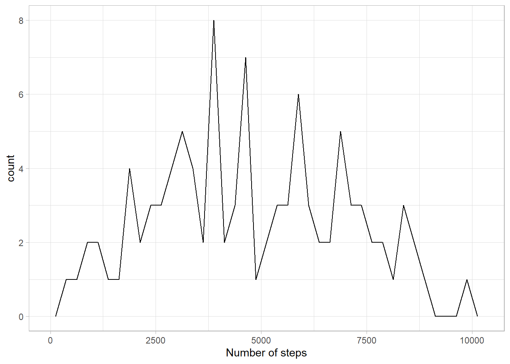
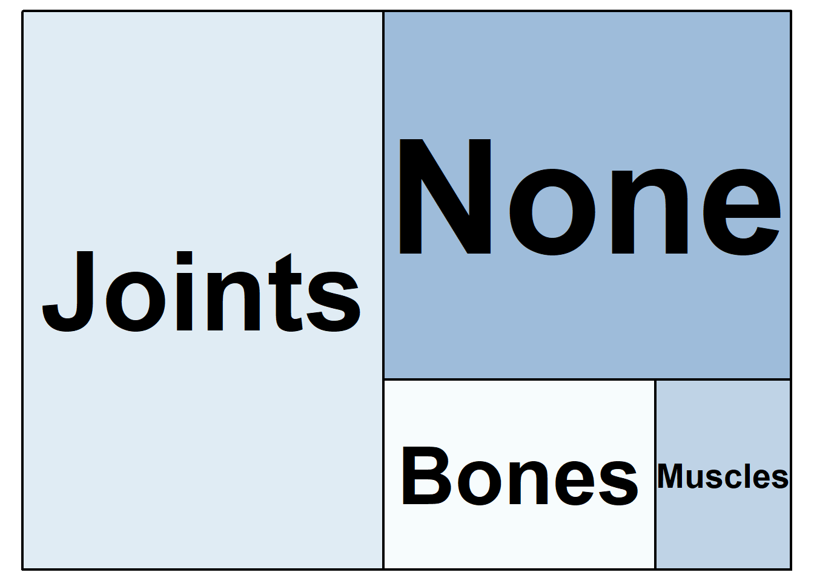

The final chapter of ADS moves beyond the core skills needed to complete the course. Our aim in this chapter is to give you a sense of what is now available to you with your new-found R skills. There’s a lot in this chapter, as we wanted to present an overview of the possibilities, although there are no exercises at the end. If you’re enrolled on ADS, you may wish to prioritise the assessment this week and come back to this chapter at a later date.
Create and customise advanced types of plots
Structure data in report, presentation, and dashboard formats
Include linked figures, tables, and references
Walkthrough video
There is no walkthrough video of this chapter because it is not core content.
10.1 Visualisation
10.1.1 Set-up
First, create a new project for the work we’ll do in this chapter named 10-advanced. Second, open and save a new R Markdown document named visualisations.Rmd, delete the welcome text and load the required packages for this section. You will probably need to install several new packages.
Chapter packages
library(tidyverse) # data wrangling functionslibrary(ggthemes) # for themeslibrary(patchwork) # for combining plotslibrary(plotly) # for interactive plotslibrary(devtools) # for package development tools# devtools::install_github("hrbrmstr/waffle")library(waffle) # for waffle plotslibrary(ggbump) # for bump plotslibrary(treemap) # for treemap plotslibrary(ggwordcloud) # for word cloudslibrary(tidytext) # for manipulating text for word cloudslibrary(sf) # for mapping geomslibrary(rnaturalearth) # for map datalibrary(rnaturalearthdata) # extra mapping datalibrary(gganimate) # for animated plotstheme_set(theme_light())
The code below creates two familiar plots from sec-viz), using the default (light) theme and palettes. First, load the data and set condition_type to a factor so you can control the order of the categories.
Next, create a bar plot of number of participants by type of condition.
# create bar plotbar <-ggplot(data = function_data, mapping =aes(x = condition_type,fill = condition_type)) +geom_bar(show.legend =FALSE) +labs(x ="Type of condition", y ="Count",title ="Participants by condition")
And create a scatterplot of gait speed by step count, distinguished by condition type.
#create scatterplotpoint <-ggplot(data = function_data, mapping =aes(x = gaitspeed, y = steps,color = condition_type)) +geom_point(alpha =0.5) +geom_smooth(method = lm, formula = y~x) +labs(x ="Gait speed (m/s)",y ="Number of steps",color ="Type of condition",title ="Gait speed by step count")
Finally, combine the two plots using the + from patchwork to see the default styles for these plots.
bar + point
Default plot styles.
Note
Try changing the theme using built-in themes or customising the colours or linetypes with scale_* functions. See sec-plotstyle for details.
10.1.3 Annotations
It’s often useful to add annotations to a plot, for example, to highlight an important part of the plot or add labels. The annotate() function creates a specific geom at x- and y-coordinates you specify.
Text annotations
Add a text annotation by setting the geom argument to “text” or “label” and adding a label. Labels have padding and a background, while text is just text.
Backslash-n \n in the label text controls where the line breaks are. Try removing or changing the position of these to see what happens.
x and y control the coordinates of the label. You will likely have to play around with these values to get them right.
The argument hjust is the horizontal justification of text, and vjust is the vertical justification. The default values are 0.5, where the text is centred on the x and y coordinates. 0 will justify to the left and bottom, while 1 justifies to the right and top.
You can change the angle of text, but not labels.
bar +# add left-justified text to the first barannotate(geom ="text",label ="Our goal is to\nreduce this\ncategory",x =0.65, y =32,hjust =0, vjust =1, color ="white", fontface ="bold",angle =45) +# add a centred label to the fourth barannotate(geom ="label",label ="Our goal is\nto increase this\ncategory",x =4, y =30,hjust =0.5, vjust =1, color =" darkturquoise", fontface ="bold")
An example of annotation text and label.
Note
See if you can work out how to make the figure below, starting with the following:
Hint: you will need to add 1 label annotation and 8 separate text annotations.
Solution
tibble(x =c(0, 0, 1, 1),y =c(0, 1, 0, 1)) %>%ggplot(aes(x, y)) +geom_point(alpha =0.25, size =4, color ="red") +annotate("label", label ="In the\nmiddle",x =0.5, y =0.5,fill ="dodgerblue", color ="white",label.padding =unit(1, "lines"),label.r =unit(1.5, "lines")) +annotate("text", label ="Bottom\nLeft",x =0, y =0, hjust =0, vjust =0) +annotate("text", label ="Top\nLeft", x =0, y =1, hjust =0, vjust =1) +annotate("text", label ="Bottom\nRight",x =1, y =0, hjust =1, vjust =0) +annotate("text", label ="Top\nRight",x =1, y =1, hjust =1, vjust =1) +annotate("text", label ="45 degrees",x =0, y =0.5, hjust =0, angle =45) +annotate("text", label ="90 degrees",x =0.25, y =0.5, angle =90) +annotate("text", label ="270 degrees",x =0.75, y =0.5, angle =270)+annotate("text", label ="-45 degrees",x =1, y =0.5, hjust =1, angle =-45)
Other annotations
You can add other geoms to highlight parts of a plot. The example below adds a rectangle around a group of points, a text label, a straight arrow from the label to the rectangle, and a curved arrow from the label to an individual point.
point +# add a rectangle surrounding high step countsannotate(geom ="rect",xmin =1.06, xmax =1.3,ymin =8600, ymax =10000,fill ="transparent", color ="red") +# add a text labelannotate("text",x =0.7, y =7500,label ="outliers") +# add an line with an arrow from the text to the boxannotate(geom ="segment", x =0.75, y =7500, xend =1.05, yend =8600,arrow =arrow(length =unit(0.5, "lines"))) +# add a curved line with an arrow # from the text to a gait speed outlierannotate(geom ="curve", x =0.65, y =7500, xend =0.525, yend =3650,curvature =0.5,arrow =arrow(length =unit(0.5, "lines")))
Example of annotations with the rect, text, segment, and curve geoms.
See the ggforce”, “https://ggforce.data-imaginist.com/”)` package for more sophisticated options, such as highlighting a group of points with an ellipse.
10.1.4 Other Plots
Frequency and density plots
In sec-histogram, we showed you how to use a histogram to show the distribution of one continuous variable. You can also use frequency or density plots.
`stat_bin()` using `bins = 30`. Pick better value with `binwidth`.
Histogram of steps.
Frequency plot
Rather than plotting each bin as a bar, you can connect a line across the top of each bin using a frequency plot. The function geom_freqpoly() works the same as geom_histogram(), except it can’t take a fill argument because it’s just a line.
ggplot(function_data, aes(x = steps)) +scale_x_continuous(name ="Number of steps",breaks =seq(0, 10000, 2500)) +geom_freqpoly(boundary =0, binwidth =250, color ="black")

Frequency plot of steps.
Density plot
If the distribution is smooth, a density plot is often a better way to show the distribution. A density plot doesn’t need the binwidth or boundary arguments because it doesn’t split the data into bins, but it can have fill.
ggplot(function_data, aes(x = steps)) +scale_x_continuous(name ="Number of steps",breaks =seq(0, 10000, 2500)) +geom_density(fill ="purple", color ="black")
Density plot of steps.
Test your understanding
Imagine you have a table of the population for each country in the world with the columns country and population. We’ll just look at the 76 countries with populations of less than a million.
Note
What kind of plot is A?
What kind of plot is B?
What kind of plot is C?
Interactive Plots
The plotly package can be used to make interactive graphs. Assign your ggplot to a variable and then use the function ggplotly() on the plot object. Note that interactive plots only work in HTML files, not PDFs or Word files.
ggplotly(point)
Interactive graph using plotly
Note
Hover over the data points above and click on the legend items.
Waffle Plots
In sec-viz, we mentioned that pie charts are such a poor way to visualise proportions that we refused to even show you how to make one. Waffle plots are a delicious alternative.
By default, geom_waffle() represents each observation with a tile and splits these across 10 rows. You can play about with the n_rows argument to determine what works best for your data.
function_data %>%count(condition_type) %>%ggplot(aes(fill = condition_type, values = n)) +geom_waffle(n_rows =8, # try setting this to 10 (the default)size =0.33, # line sizemake_proportional =FALSE, # use raw valuescolour ="white", # line colourflip =FALSE, # bottom-top or left-rightradius = grid::unit(0.1, "npc") # set to 0.5 for circles ) +theme_enhance_waffle() +# gets rid of axesscale_fill_colorblind(name ="Type of condition")
Waffle plot.
The waffle plot can also be used to display the counts as proportions To achieve these, set n_rows = 10 and make_proportional = TRUE. Now, rather than each tile representing one observation, each tile represents 1% of the data.
Treemap plots are another way to visualise proportions. Like the waffle plots, you need to count the data by category first. You can use any brewer palette for the fill.
function_data %>%count(condition_type) %>%treemap(index ="condition_type", # column with number of rectanglesvSize ="n", # column with size of rectangletitle ="",palette ="BuPu",inflate.labels =TRUE# expand labels to size of rectangle )
Treemap plot.
You can also represent multiple categories with treemaps
function_data %>%count(condition_type, generalhealth) %>%arrange(generalhealth) %>%treemap(# use c() to specify two variablesindex =c("generalhealth", "condition_type"), vSize ="n", title ="",palette ="Dark2",# set different label sizes for each type of labelfontsize.labels =c(30, 10), # set different alignments for two label typesalign.labels =list(c("left", "top"), c("center", "center")) )

Treemap with two variables
Bump Plots
Bump plots are very useful for visualising how rankings change over time. So first, we need to get some ranking data. Let’s start with a more typical raw data table, containing an identifying column of person and three columns for their scores each week
# make a small dataset of scores for 3 people over 3 weeksscore_data <-tribble(~person, ~week_1, ~week_2, ~week_3,"Abeni", 80, 75, 90,"Beth", 75, 85, 75,"Carmen", 60, 70, 80)
Now we make the table long, group by week, and use the rank() function to find the rank of each person’s score each week. Use n() - rank(score) + 1 to reverse the ranks so that the highest score gets rank 1. We also need to make the week variable a number.
We can make this more attractive by customising the axes and adding text labels. Try running each line of this code to see how it builds up.
Add label = person to the mapping so we can add in text labels.
Increase the size of the lines with the size argument to geom_bump()
We don’t need labels for weeks 1.5 and 2.5, so change the x-axis breaks
The expand argument for the two scale_ functions expands the plot area so we can fit text labels to the right.
It makes more sense to have first place at the top, so reverse the order of the y-axis with scale_y_reverse() and fix the breaks and expansion.
Add text labels with geom_text(), but just for week 3, so set data = filter(rank_data, week == 3) for this geom.
Set x = 3.05 to move the text labels just to the right of week 3, and set hjust = 0 to right-justify the text labels (the default is hjust = 0.5, which would center them on 3.05).
Remove the legend and grid lines. Increase the x-axis text size.
Warning: Using `size` aesthetic for lines was deprecated in ggplot2 3.4.0.
ℹ Please use `linewidth` instead.
Bump plot with added features.
Word Clouds
Word clouds are a common way to summarise text data. First, download Health_Apps_Review.csv into your data folder and then load it into an object. This dataset contains text reviews as well as the 1-5 rating from health app users.
We can use this data to look at how the words used differ depending on the rating given. To make the text data easy to work with, the function tidytext::unnest_tokens() splits the words in the input column into individual words in a new output column. unnnest_tokens() is particularly helpful because it also does things like removes punctuation and transforms all words to lower case to make it easier to work with. Compare words and `reviews`` to see how they map on to each other.
words <- reviews %>%unnest_tokens(output ="word", input ="review")
We can then add another line of code using a pipe that counts how many instances of each word there is by rating to give us the most popular words.
The problem is that the most common words are all function words rather than content words, which makes sense because these words have the highest word frequency in natural language.
Helpfully, tidytext contains a list of common “stop words”, i.e., words that you want to ignore, that are stored in an object named stop_words. It is also very useful to define a list of custom stop words based upon the unique properties of your data (it can sometimes take a few attempts to identify what’s appropriate for your dataset). This dataset contains a lot of numbers that aren’t informative, and it also contains “http” from website links, so we’ll get rid of both with a custom stop list.
Once you have defined your stop words, you can then use anti_join() to remove any word that is present in the stop word list.
To get the top 25 words, we then group by rating and use dplyr::slice_max(), ordered by the column n.
custom_stop <-tibble(word =c(0:9, "http", 2020))words <- reviews %>%unnest_tokens(output ="word", input ="review") %>%count(word, rating) %>%anti_join(stop_words, by ="word") %>%anti_join(custom_stop, by ="word") %>%group_by(rating) %>%slice_max(order_by = n, n =25, with_ties =FALSE) %>%ungroup()
First, let’s make a word cloud for users who gave a 1-star rating:
Filter retains only the data for 1-star ratings.
label comes from the word column and is the data to plot (i.e., the words).
colour makes the words red (you could also set this to word to give each word a different colour or n to vary colour continuously by frequency).
size makes the size of the word proportional to n, the number of times the word appeared.
It’s worth highlighting that whilst word clouds are very common, they’re really the equivalent of pie charts for text data because we’re not very good at making accurate comparisons based on size. You might be able to see what’s the most popular word, but can you accurately determine the 2nd, 3rd, 4th or 5th most popular word based on the clouds alone? There’s also the issue that just because it’s text data doesn’t make it a qualitative analysis and just because something is said a lot doesn’t mean it’s useful or important. But, this argument is outwith the scope of this book.
Maps
Working with maps can be tricky. The sf package provides functions that work with ggplot2, such as geom_sf(). The rnaturalearth package (and associated data packages that you may be prompted to download) provide high-quality mapping coordinates.
ne_countries() returns world country polygons (i.e., a world map). We specify the object should be returned as a “simple feature” class sf so that it will work with geom_sf(). If you would like a deep dive on simple feature objects, check out a vignette from the sf package.
It’s worth checking out what the object ne_countries() returns to see just how much information is available.
Try changing the values and colours below to get a sense of how the code works.
# get the world map coordinatesworld_sf <-ne_countries(returnclass ="sf", scale ="medium")# plot them on a light blue backgroundggplot() +geom_sf(data = world_sf, size =0.3) +theme(panel.background =element_rect(fill ="lightskyblue2"))
You can combine multiple countries using bind_rows() and visualise them with different colours for each country.
# get and bind country datainstall.packages('rnaturalearthhires', repos =c('https://ropensci.r-universe.dev', 'https://cloud.r-project.org'))
Installing package into 'C:/Users/osm25/AppData/Local/R/win-library/4.3'
(as 'lib' is unspecified)
library("rnaturalearthhires")
Warning: package 'rnaturalearthhires' was built under R version 4.3.3
package 'rnaturalearthhires' successfully unpacked and MD5 sums checked
The downloaded binary packages are in
C:\Users\local_osm25\Temp\Rtmp6fnSqa\downloaded_packages
You can join Scottish population data to the map table to visualise data on the map using colours or labels.
# load map datascotland_sf <-ne_states(geounit ="Scotland", returnclass ="sf")# load population data from# https://www.indexmundi.com/facts/united-kingdom/quick-facts/scotland/populationscotpop <-read_csv("data/scottish_population.csv", show_col_types =FALSE)# join data and fix typo in the mapscotmap_pop <- scotland_sf %>%mutate(name =ifelse(name =="North Ayshire", yes ="North Ayrshire", no = name)) %>%left_join(scotpop, by ="name") %>%select(name, population, geometry)
Warning
There is a typo in the data from rnaturalearth, so you need to change “North Ayshire” to “North Ayrshire” before you join the population data.
Setting the fill to population in geom_sf() gives each region a colour based on its population.
The colours are customised with scale_fill_viridis_c(). The breaks of the fill scale are set to increments of 100K (1e5 in scientific notation) and the scale is set to span 0 to 600K.
paste0() creates the labels by taking the numbers 0 through 6 and adding “00 k” to them.
Finally, the position of the legend is moved into the sea using legend.position().
Warning: A numeric `legend.position` argument in `theme()` was deprecated in ggplot2
3.5.0.
ℹ Please use the `legend.position.inside` argument of `theme()` instead.
Map coloured by population.
Animated Plots
Animated plots are a great way to add a wow factor to your reports, but they can be complex to make, distracting, and not very accessible, so use them sparingly and only for data visualisation where the animation really adds something. The package gganimate”, “https://gganimate.com/”)` has many functions for animating ggplots.
Here, we’ll load some population data from the United Nations. Download the file into your data folder and open it in Excel first to see what it looks like. The code below gets the data from the first tab, filters it to just the 6 world regions, makes the data long, and makes sure the year column is numeric and the pop column shows population in whole numbers (the original data is in 1000s).
Let’s make an animated plot showing how the population in each region changes with year. First, make a static plot. Filter the data to the most recent year so you can see what a single frame of the animation will look like.
To convert this to an animated plot that shows the data from multiple years:
Remove the filter and add transition_time(year).
Use the {} syntax to include the frame_time in the title.
Use anim_save() to save the animation to a GIF file and set this code chunk to eval = FALSE because creating an animation takes a long time and you don’t want to have to run it every time you knit your report.
library(gifski)anim <- worldpop %>%ggplot(aes(x = region, y = pop, fill = region)) +geom_col(show.legend =FALSE) +scale_fill_viridis_d() +scale_x_discrete(name ="",guide =guide_axis(n.dodge=2))+scale_y_continuous(name ="Population",breaks =seq(0, 3e9, 1e9),labels =paste0(0:3, "B")) +ggtitle('Year: {frame_time}') +transition_time(year)dir.create("images", FALSE) # creates an images directory if neededanim_save(animation = anim,width =8, height =5, units ="in", res =150,renderer =gifski_renderer(),filename ="images/gganim-demo.gif")
You can show your animated gif in an html report (animations don’t work in Word or a PDF) using include_graphics(), or include the GIF in a dynamic document like PowerPoint.
knitr::include_graphics("images/gganim-demo.gif")
Animated gif.
Warning
There are actually not many plots that are really improved by animating them. The plot below gives the same information at a single glance.
10.1.5 Resources
There are so many more options for data visualisation in R than we have time to cover here. The following resources will get you started on your journey to informative, intuitive visualisations.
Close your visualisation Markdown and open and save a new R Markdown document named reports.Rmd, delete the welcome text and load the required packages for this section.
#remove.packages("rlang")#install.packages("rlang")#library(rlang)#remove.packages("flexdashboard")#install.packages("flexdashboard")library(tidyverse) # data wrangling functionslibrary(bookdown) # for chaptered reportslibrary(flexdashboard) # for dashboards
Warning: package 'flexdashboard' was built under R version 4.3.3
If you need to create longer reports with links between sections, you can edit the YAML to use a bookdown format. bookdown::html_document2 is a useful one that adds figure and table numbers automatically to any figures or tables with a caption and allows you to link to these by reference.
To create links to tables and figures, you need to name the code chunk that created your figures or tables, and then call those names in your inline coding:
```{r tab-my-table}
# table code here
```
```{r fig-my-figure}
# figure code here
```
See @tab-my-table or @fig-my-figure.
Warning
The code chunk names can only contain letters, numbers and dashes. If they contain other characters like spaces or underscores, the referencing will not work.
You can also link to different sections of your report by naming your headings with {#sec-}:
# My first heading {#sec-heading-1}## My second heading {#sec-heading-2}See @sec-heading-1 and @sec-heading-2.
The code below shows how to link text to figures or tables in a full report using the built-in diamonds dataset - use your reports.Rmd to create this document now. You can see the HTML output here.
---title: "Linked Document Demo"output: bookdown::html_document2: number_sections: true---```{r setup, include=FALSE}knitr::opts_chunk$set(echo =FALSE,message =FALSE,warning =FALSE)library(tidyverse)library(kableExtra)theme_set(theme_minimal())```Diamond price depends on many features, such as:- cut (See @tab-tab:by-cut))- colour (See @tab-tab:by-colour))- clarity (See @fig-by-clarity))- carats (See @fig-by-carat))- See @sec-conclusion) for concluding remarks## Tables### Cut```{r by-cut}diamonds %>%group_by(cut) %>%summarise(avg =mean(price),.groups ="drop") %>%kable(digits =0, col.names =c("Cut", "Average Price"),caption ="Mean diamond price by cut.") %>%kable_material()```### Colour```{r by-colour}diamonds %>%group_by(color) %>%summarise(avg =mean(price),.groups ="drop") %>%kable(digits =0, col.names =c("Cut", "Average Price"),caption ="Mean diamond price by colour.") %>%kable_material()```## Plots### Clarity```{r by-clarity, fig.cap = "Diamond price by clarity"}ggplot(diamonds, aes(x = clarity, y = price)) +geom_boxplot() ```### Carats```{r by-carat, fig.cap = "Diamond price by carat"}ggplot(diamonds, aes(x = carat, y = price)) +stat_smooth()```### Concluding remarks {#sec-conclusion}I am not rich enough to worry about any of this.
This format defaults to numbered sections, so set number_sections: false in the YAML header if you don’t want this. If you remove numbered sections, links like @sec-conclusion) will show “??”, so you need to use URL link syntax instead, like this:
See the [last section](#conclusion) for concluding remarks.
10.2.3 References
There are several ways to do in-text references and automatically generate a bibliography in R Markdown. Markdown files need to link to a BibTex file (a plain text file with references in a specific format) that contains the references you need to cite. You specify the name of this file in the YAML header, like bibliography: filename.bib and cite references in text using an at symbol and a shortname, like [@tidyverse].
Creating a BibTeX file
Most reference software like EndNote, Zotero or Mendeley have exporting options that can export to BibTeX format. You just need to check the shortnames in the resulting file.
You can also make a BibTeX file and add references manually. In RStudio, go to File > New File… > Text File and save the file as “bibliography.bib”.
Next, add the line bibliography: bibliography.bib to your YAML header.
Adding references
You can add references to a journal article in the following format:
@article{shortname,
author = {Author One and Author Two and Author Three},
title = {Paper Title},
journal = {Journal Title},
volume = {vol},
number = {issue},
pages = {startpage--endpage},
year = {year},
doi = {doi}
}
You can get the reference for an R package using the functions citation() and toBibtex(). You can paste the bibtex entry into your bibliography.bib file. Make sure to add a short name (e.g., “ggplot2”) before the first comma to refer to the reference.
citation(package="ggplot2") %>%toBibtex()
@Book{,
author = {Hadley Wickham},
title = {ggplot2: Elegant Graphics for Data Analysis},
publisher = {Springer-Verlag New York},
year = {2016},
isbn = {978-3-319-24277-4},
url = {https://ggplot2.tidyverse.org},
}
Google Scholar entries have a BibTeX citation option. This is usually the easiest way to get the relevant values, although you have to add the DOI yourself. You can keep the suggested shortname or change it to something that makes more sense to you.
Citing references
You can cite references in text like this:
This tutorial uses several R packages [@tidyverse;@rmarkdown].
Put a minus in front of the @ if you just want the year:
Franconeri and colleagues [-@franconeri2021science] review research-backed guidelines for creating effective and intuitive visualizations.
Franconeri and colleagues (2021) review research-backed guidelines for creating effective and intuitive visualizations.
Citation styles
You can search a list of style files (e.g., APA, MLA, Harvard) and download a file that will format your bibliography. You’ll need to add the line csl: filename.csl to your YAML header.
Reference section
By default, the reference section is added to the end of the document. If you want to change the position (e.g., to add figures and tables after the references), include <div id="refs"></div> where you want the references.
Note
Add in-text citations and a reference list to your report.
10.2.4 Interactive tables
One way to make your reports more exciting is to use interactive tables. The DT::datatable() function displays a table with some extra interactive elements to allow readers to search and reorder the data, as well as controlling the number of rows shown at once. This can be especially helpful. This only works with HTML output types. The DT website has extensive tutorials, but we’ll cover the basics here.
You can customise the display, such as changing column names, adding a caption, moving the location of the filter boxes, removing row names, applying classes to change table appearance, and applying advanced options.
# https://datatables.net/reference/option/my_options <-list(pageLength =5, # how many rows are displayedlengthChange =FALSE, # whether pageLength can changeinfo =TRUE, # text with the total number of rowspaging =TRUE, # if FALSE, the whole table displaysordering =FALSE, # whether you can reorder columnssearching =FALSE# whether you can search the table)datatable(data = scotpop,colnames =c("County", "Population"),caption ="The population of Scottish counties.",filter ="none", # "none", "bottom" or "top"rownames =FALSE, # removes the number at the leftclass ="cell-border hover stripe", # default is "display"options = my_options)
Note
Create an interactive table like the one below from the diamonds dataset of diamonds where the table value is greater than 65 (the whole table is much too large to display with an interactive table). Show 20 items by default and remove the search box, but leave in the filter and other default options.
Solution
my_options <-list(pageLength =20, # how many rows are displayedsearching =FALSE# whether you can search the table)diamonds %>%filter(table >65) %>%select(-table, -(x:z)) %>% DT::datatable(caption ="All diamonds with table > 65.",options = my_options )
10.2.5 Other formats
You can create more than just reports with R Markdown. You can also create presentations, interactive dashboards, books, websites, and web applications.
Presentations
You can choose a presentation template when you create a new R Markdown document. We’ll use ioslides for this example, but the other formats work similarly.
Ioslides RMarkdown template.
The main differences between this and the Rmd files you’ve been working with until now are that the output type in the YAML header is ioslides_presentation instead of html_document and this format requires a specific title structure. Each slide starts with a level-2 header.
The template provides you with examples of text, bullet point, code, and plot slides. You can knit this template to create an HTML document with your presentation. It often looks odd in the RStudio built-in browser, so click the button to open it in a web browser. You can use the space bar or arrow keys to advance slides.
The code below shows how to load some packages and display text, a table, and a plot. You can see the HTML output here.
---title: "Presentation Demo"author: "Lisa DeBruine"output: ioslides_presentation---```{r setup, include=FALSE}knitr::opts_chunk$set(echo =FALSE)library(tidyverse)library(kableExtra)```## Slide with MarkdownThe following slides will present some data from the `diamonds` dataset from **ggplot2**.Diamond price depends on many features, such as:- cut- colour- clarity- carats## Slide with a Table```{r}diamonds %>%group_by(cut, color) %>%summarise(avg_price =mean(price),.groups ="drop") %>%pivot_wider(names_from = cut, values_from = avg_price) %>%kable(digits =0, caption ="Mean diamond price by cut and colour.") %>%kable_material()```## Slide with a Plot```{r pressure}ggplot(diamonds, aes(x = cut, y = price, color = color)) +stat_summary(fun = mean, geom ="point") +stat_summary(aes(x =as.integer(cut)), fun = mean, geom ="line") +scale_x_discrete(position ="top") +scale_color_viridis_d(guide =guide_legend(reverse =TRUE)) +theme_minimal() ```
Dashboards
Dashboards are a way to display text, tables, and plots with dynamic formatting. After you install flexdashboard, you can choose a flexdashboard template when you create a new R Markdown document.
Flexdashboard RMarkdown template.
The code below shows how to load some packages, display two tables in a tabset, and display two plots in a column. You can see the HTML output here.
---title: "Flexdashboard Demo"output: flexdashboard::flex_dashboard: social: [ "twitter", "facebook", "linkedin", "pinterest" ] source_code: embed orientation: columns vertical_layout: fill---```{r setup, include=FALSE}library(flexdashboard)library(tidyverse)library(kableExtra)library(DT) # for interactive tablestheme_set(theme_minimal())```Column {data-width=350, .tabset}--------------------------------### By CutThis table uses `kableExtra` to render the table with a specific theme.```{r}diamonds %>%group_by(cut) %>%summarise(avg =mean(price),.groups ="drop") %>%kable(digits =0, col.names =c("Cut", "Average Price"),caption ="Mean diamond price by cut.") %>%kable_classic()```### By ColourThis table uses `DT::datatable()` to render the table with a searchable interface.```{r}diamonds %>%group_by(color) %>%summarise(avg =mean(price),.groups ="drop") %>% DT::datatable(colnames =c("Colour", "Average Price"), caption ="Mean diamond price by colour",options =list(pageLength =5),rownames =FALSE) %>% DT::formatRound(columns=2, digits=0)```Column {data-width=350}-----------------------### By Clarity```{r by-clarity, fig.cap = "Diamond price by clarity"}ggplot(diamonds, aes(x = clarity, y = price)) +geom_boxplot() ```### By Carats```{r by-carat, fig.cap = "Diamond price by carat"}ggplot(diamonds, aes(x = carat, y = price)) +stat_smooth()```
Change the size of your web browser to see how the boxes, tables and figures change.
The best way to figure out how to format a dashboard is trial and error, but you can also look at some sample layouts.
Books
You can create online books with bookdown. In fact, the book you’re reading was created using bookdown. After you download the package, start a new project and choose “Book project using bookdown” from the list of project templates.
Bookdown project template.
Each chapter is written in a separate .Rmd file and the general book settings can be changed in the _bookdown.yml and _output.yml files.
Websites
You can create a simple website the same way you create any R Markdown document. Choose “Simple R Markdown Website” from the project templates to get started. See sec-webpages for a step-by-step tutorial.
For more complex, blog-style websites, you can investigate blogdown. After you install this package, you will also be able to create template blogdown projects to get you started.
This is well outside the scope of this class, but the skills you’ve learned here provide a good start. The following free book Building Web Apps with R Shiny can get you started creating shiny apps.
And so, we are done. We’ve covered a huge amount over the course of Applied Data Skills, and whilst you’re likely more comfortable with some bits than others, the skills you have developed are truly impressive. Even if you go no further than what you’ve learned in this book, you can now work reproducibly to produce informative summaries and visualisations that provide new insights into your data and reduce human error.
But it’s also important to recognise that your knowledge of R will never be complete. In the course of writing this book, the entire ADS team have learned new functions, new arguments, new approaches, and new reasons to love or loathe certain data visualisations. The flexibility and possibility of R is what makes it frustrating and empowering in equal measure. What we hope more than anything is that Applied Data Skills is the start of your journey with R, not the end. Please keep in touch, we’d love to see where it takes you.
Olivia Malkowski,
Sean Williams,
James Fern
Allaire, J., Xie, Y., McPherson, J., Luraschi, J., Ushey, K., Atkins, A., Wickham, H., Cheng, J., & Chang, W. (2018). Rmarkdown: Dynamic documents for r. https://CRAN.R-project.org/package=rmarkdown
Franconeri, S. L., Padilla, L. M., Shah, P., Zacks, J. M., & Hullman, J. (2021). The science of visual data communication: What works. Psychological Science in the Public Interest, 22(3), 110–161. https://doi.org/10.1177/15291006211051956